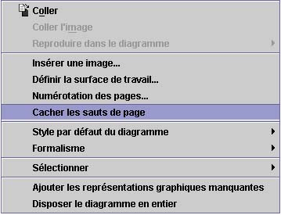

Montrer ou cacher le saut de page
Pour montrer ou cacher les sauts de pages,
cliquez avec le bouton droit
dans un espace blanc du diagramme et, dans le
menu contextuel
choisissez
Montrer/cacher les sauts de pages
.
